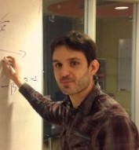
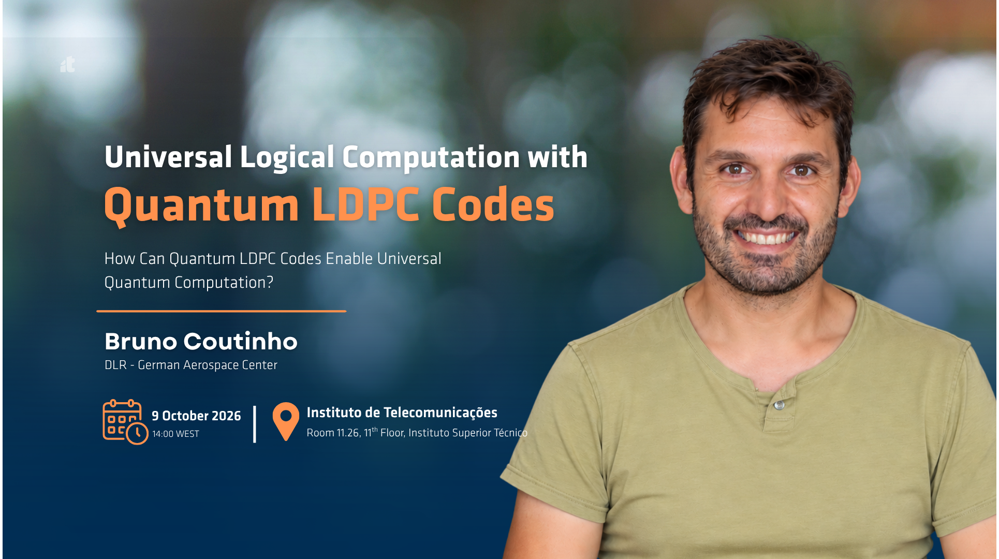

Bruno Coutinho
Quantum Technologies and Complex Systems
I work on quantum technologies and complex systems. I received my PhD from Northeastern University in Boston in 2016, working on complex network theory. I then spent several years at the Instituto de Telecomunicações in Lisbon, first as a postdoc and later as a researcher, studying quantum communication over complex networks.
- Currently, I am at the German Aerospace Center (DLR) in Munich, where I focus on quantum error correction in partnership with companies building the first quantum computers.
- I also hold an Invited Assistant Professor position at the University of Minho in Braga, Portugal, where I teach a course on quantum error correction.
Research
Quantum error correction
Partnering with the quantum industry to develop fault-tolerant, universal quantum computers.
Quantum communication
Research on quantum communication: routing and entanglement distribution for the quantum internet.
Quantum computation and complex networks
Research on quantum computation tailored to complex networks, graph problems with real-world applications.
News
-
Invited talk, “Universal Logical Computation with Quantum LDPC Codes”, at the Instituto de Telecomunicações (IT) in Lisbon.

Thesis opportunities
Contact me for Master and PhD thesis opportunities. Looking for students on the following projects.
Entanglement distribution using QLDPC codes
Ideal for a Master student with a background in physics and/or information theory.
Degeneracy-aware search-based decoders
Ideal for a Master student with a background in physics and/or computational sciences.
Degenerate-set decoding using affine decoders
Ideal for a student with a background in information theory and/or computational sciences.
Class slides
Crash course on quantum error correction
Crash course slides (PDF)
Logical operations on QLDPC codes, overview (PDF)
Contact
-
bruno.colhocoutinho@dlr.de
bruno.coutinho@lx.it.pt - DLR
- German Aerospace Center, Munich
- University
- University of Minho, Braga
- Scholar
- Google Scholar profile
Selected Publications
Quantum error correction
- D. Cruz, F. A. Monteiro, A. Roque, B. C. Coutinho. Fault-tolerant noise guessing decoding of quantum random codes. IEEE Transactions on Quantum Engineering 6, 1–26 (2025).
- D. Cruz, F. A. Monteiro, B. C. Coutinho. Quantum error correction via noise guessing decoding. IEEE Access 11, 119446–119461 (2023).
- O. Ferraz, B. Coutinho, G. Falcao, M. Gomes, F. A. Monteiro, V. Silva. GPU-accelerated syndrome decoding for quantum LDPC codes below the 63 µs latency threshold. 59th Asilomar Conference on Signals, Systems, and Computers, 1878–1882 (2025).
Quantum communication and networks
- L. Bugalho, B. C. Coutinho, F. A. Monteiro, Y. Omar. Distributing multipartite entanglement over noisy quantum networks. Quantum 7, 920 (2023).
- B. C. Coutinho, W. J. Munro, K. Nemoto, Y. Omar. Robustness of noisy quantum networks. Communications Physics 5, 105 (2022).
- B. C. Coutinho, R. Monteiro, L. Bugalho, F. A. Monteiro. Entanglement routing based on fidelity curves. arXiv:2303.12864 (2023).
Quantum computation and complex networks
- J. P. Moutinho, A. Melo, B. Coutinho, I. A. Kovács, Y. Omar. Quantum link prediction in complex networks. Physical Review A 107, 032605 (2023).
- M. Krenn, L. Buffoni, B. Coutinho, S. Eppel, J. G. Foster, A. Gritsevskiy, et al. Forecasting the future of artificial intelligence with machine learning-based link prediction in an exponentially growing knowledge network. Nature Machine Intelligence 5, 1326–1335 (2023).
- B. C. Coutinho, A. V. Goltsev, S. N. Dorogovtsev, J. F. F. Mendes. Kuramoto model with frequency-degree correlations on complex networks. Physical Review E 87, 032106 (2013).
Full and up-to-date list on Google Scholar.